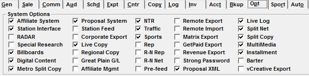
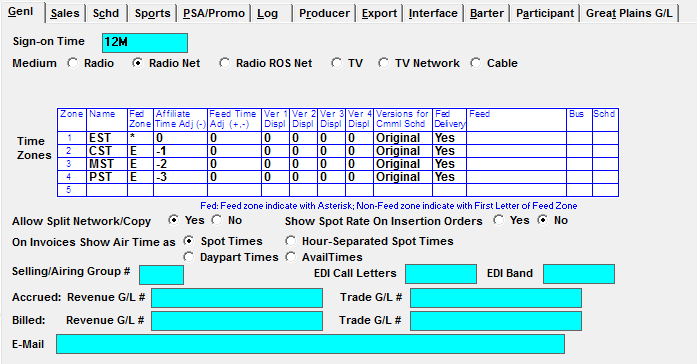
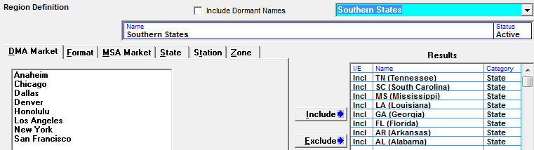
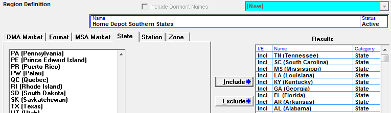
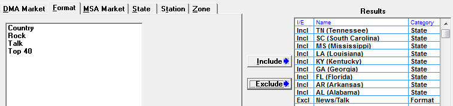
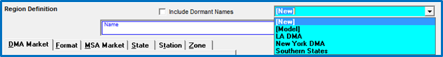
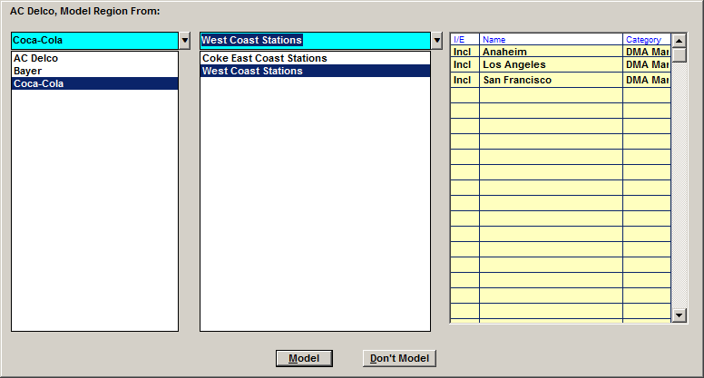

Split Copy
This section explains how to set up the system to use split copy and how to define regions to receive split copy.
When creating copy rotations, there are two main categories that can be entered: generic rotations and split copy (or regional copy) rotations. Generic copy is copy that airs on all stations – except for those stations that will be receiving split copy. For a basic example of how this works, an advertiser could have special regional copy for the city of New York, while all the rest of the country will be airing “generic” copy. The way this would be entered is the generic copy instructions would be entered first, then the regional copy instructions for New York using a special Region that gets defined to include all New York stations (perhaps by using the DMA of New York).
Split copy regions can be based on any of the following regional categories defined for a station in the Affiliate System:
- DMA market
- MSA market
- Station Format
- State
- Time Zone
- Specific Stations by Call Letters
The network logs and invoices show the generic copy, while the affiliate logs and exports will show any regional copy (and if there’s no regional copy, the generic copy will be used).
Traffic System Setup
Site Options
In Site Options->Opt (options) “Split Copy” must be enabled.

Vehicles
In the Vehicles->Options->General tab, indicate which vehicles can carry split copy by setting “Allow Split Network/Copy” to Yes.

Affiliate System Setup
Stations Screen
Split Copy regions can use the DMA market, MSA Market, Format, State, Time Zone or specific Station Call Letters. The system uses these settings to determine which stations get the split copy and which stations get the regional copy. These values must be defined correctly on the Stations screen to ensure the stations get the correct copy.
Agreements Screen
Any station that should be receiving split copy for a given vehicle must also have an agreement for that vehicle, and it must also not be set to “Prohibit split copy with air live” on the Agreement Pledge tab.
Creating a Region
Regions must be created that match the designated copy split information. You can create new regions, model from existing regions, or import stations to create a region.
- To create a Region, first select the Advertiser from the advertiser dropdown.
- Click the Region button along the bottom of the screen.
- Select “New” from the dropdown in the upper right corner of the Region Definition screen.

- Name: Enter a name for the region that is being created.
- Status: The status should be set to “Active” if the region is intended for use (regions can also be set to “Dormant” if they’re no longer meant to be used).
- DMA Market/Format/MSA Market/State/Station/Zone: Select the criteria to be used to define the Region from the appropriate tab by clicking the item from the list box on the left to highlight it in blue, then clicking the Include or Exclude button.
- Include: Press Include if you want any stations that match the selected criteria to get the regional copy entered for this region. For example, if the region is only for stations in the New York City market, select “New York” from the DMA Market tab, then press Include. This means that all stations that are set to the DMA of New York City in the Affiliate Stations DMA Market area will be part of this region.
- Exclude: Press Exclude if you want any stations that match the selected criteria to not get the regional copy entered for this region. For example, if you wanted this region to be for all Formats except Talk, press the Format tab, click once on Talk, and press the Exclude button. Now, all stations that do not have the Talk format will be part of this region.
After defining the criteria the region will be using, press the Save button to save the new region. It will now be selectable from the region area of the rotation header when creating or editing rotations, and selectable on the Copy Grid (explained in detail in a later section of this document).
If you are creating a region by station that includes multicast stations, be sure to include each station in the multicast configuration, not just the primary station. On version 7.1 and above, a warning message will appear when Save is pressed if the region definition applies to one or more stations in a multicast group, but not all stations in that multicast group. For example, if KJJJ-FM and KJJJ-AM are in a multicast group, and the region definition is by station, and it includes KJJJ-FM but not KJJJ-AM, the warning message will appear. As another example, if the region is for the Los Angeles DMA, and KJJJ-FM is defined with the Los Angeles DMA but KJJJ-AM is Anaheim, then the warning message will appear. The problem must be resolved before the region can be saved. The warning message reads: “Not all multicast stations included”, with a path that points to the Messages folder, where the text file MulticastMissing.txt can be found, which lists the missing stations.
Important information about Defining Split Copy by State
On version 7.1 and above, there is a setting in the Traffic Site Options -> Copy tab labeled "Split Copy Station State Address By" that is used to determine which state a station is in (mailing address state, physical address state, or state of license). On prior software versions, the mailing address state defined for the station is used to determine what state the station is in.
Compound Copy Splits
A compound copy split uses a region that includes more than one type of regional criteria. For example, advertiser Home Depot may have regional copy for Southern states only, but may not want it to air on any stations with a News/Talk format. This request can be accommodated by creating a compound copy split.
For this example, there will be a new region created that includes the Southern states as shown below.

Once all the states have been selected and added to the right side of the screen for inclusion, click on the Format tab, select News/Talk, then click “Exclude”. This will add News/Talk to the existing region as being excluded from the Southern states.

When using this region on a copy rotation, the regional copy will get assigned to all Southern states that are not set to the Format of News/Talk.
This basic procedure can be used as a guide to create other compound copy splits as needed.
Editing a Region
Previously saved regions can be edited from the Region Definition screen. Select the region from the region dropdown and edit it as needed. If copy had already been assigned using the previously created region, it will need to be reassigned if the region definition had a mistake in it at the time of assigning copy (assuming the air week is still in the future).
Removing Criteria from a Region
To remove an included or excluded category from a Region, select the item to remove and click the “Move” button.
This moves the criteria from the Results area, out of the Region, back to the left side of the screen.
Modeling Regions
If there are two advertisers that share the same region specifications, you can model a region from one advertiser to another. Or if you want to create a different version of an existing region for the same advertiser, you can model a new region from a previously created region for the same advertiser. The steps for doing both of these types of modeling are basically the same.
- Select the advertiser that the new region is being created for from the advertiser dropdown on the Copy Screen.
- Press the Region button.
- From the Region dropdown, select “Model” and press Tab.

- The “Model Region From” screen will appear.
- Select the advertiser that has a region that will be modeled from the list of advertisers on the left. The same advertiser or a different advertiser can be selected from this list box, depending on whether the region being modeled is from the same advertiser that was selected from the main advertiser dropdown on the Copy screen, or from a different advertiser.
- Pick the region to model from the middle section. When selecting a region, the criteria that makes up the region will be shown in the yellow grid on the right.
In the example below, the advertiser “AC Delco” was selected on the Copy screen to create a modeled region for. The advertiser “Coca-Cola” was selected as the advertiser to model a region from, and the region “West Coast Stations” was selected as the region to model.

- After selecting the region to model from, press the “Model” button, then enter a new name for the newly created region. At this point, you can add or remove regional definitions from the region and press Save when finished to save the newly created region.
- Pressing “Don’t Model” on the “Model Region From” screen will return you to the region screen without creating a new region.
Copy Regions Report
To view or proofread copy regions, run the Copy Regions report. This report is run by advertiser and region and shows all the stations that are included as part of a single copy region.